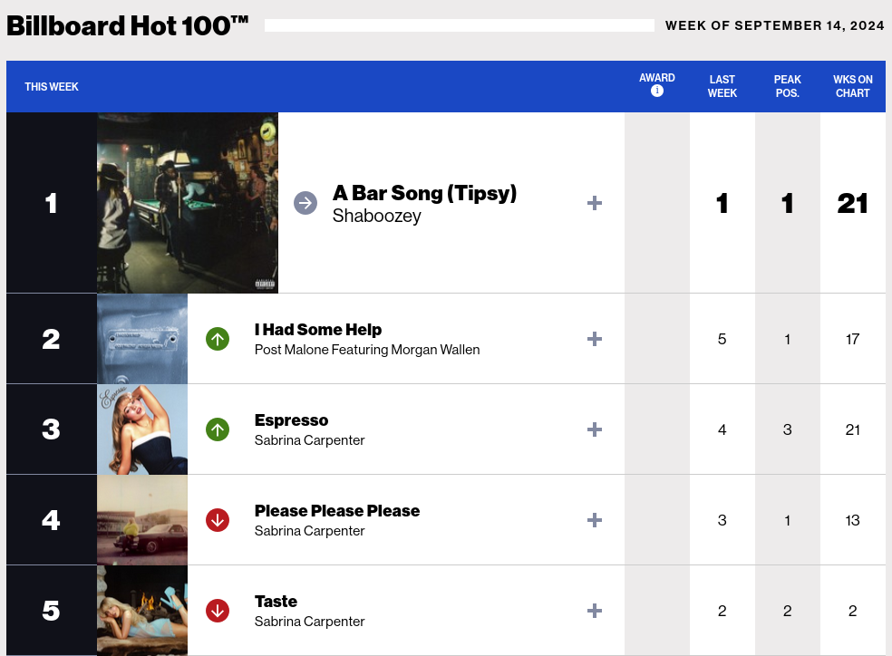

What does it take to make it onto the Billboard Top 100?
Millions of people in the world consume to music every day in both digital formats and live. The music industry's revenue was reported to be $28.6 billion at the beginning of 2024. It is an obvious and ubiquitous part of life, and advancements in the internet and social media are making it easier for both fans to access music and for artists to grow their fanbases. For artists, a common dream is often for a song to go viral which can lead to opportunities to transform a simple hobby into a music career. This is, of course, easier said than done. A quick google search for "what makes a viral song" returned a Medium.com article that lists "catchiness and relatability", "platform optimization", "emotional or cultural resonance", and "quality and production" as four keys. The author also lists TikTok and Spotify as critical for acheiving virality. Another online article lists marketing, simplicity, and sharability as important factors. The list of articles that describe how to make viral music is endless, but most likely none of them use any kind of scientific methods to back up what they are saying.
A metric of song success, the Billboard Hot 100, started in 1958. This a weekly chart that lists the top 100 most popular songs by U.S. artists. Songs are ranked each week based on total music streaming activity, radio airplay, and sales data. Having a song appear on the chart is a badge of honor and thus it is sought after by many artists. For a smaller artist, it could mean the breakthrough they need to truly start a career in music. It makes sense then that studying the songs on the Billboard Hot 100 could be a useful exercise in viral song writing. Those songs made the list for a reason, and while many of the songs on the list are by established artists like rapper Post Malone and singer Sabrina Carpenter, the songs by these artists is popular for a reason. By studying the charts, new artists could find common threads in the top songs and learn from that. This, however, is definitely easier said than done.

Questions
- What aspects of a song best predict how popular it will become?
- Does the time of year have any impact on what genre of song makes it to the Billboard Hot 100?
- For big name artists (eg Taylor Swift, Elton John), to what degree does the quality of their song help them make it onto the Billboard Hot 100? In other words, is it the song or their name at that point that gets them there?
- To what degree does the genre of song matter for making it to the Billboard Hot 100?
- How does the valence of a song impact its success?
- To what degree does the tempo of a song impact the probability of it being on the Billboard Hot 100
- Do loud and boistrous songs perform better than softer, acoustic songs?
- How does the mode of a song (ie whether it is in a major or minor key) impact its success?
- Does being a male vs a female singer have an impact on whether or not a song makes it to the Billboard Hot 100?
- How has the type of song that makes it to the Billboard Hot 100 changed between the 1950s and now?
References